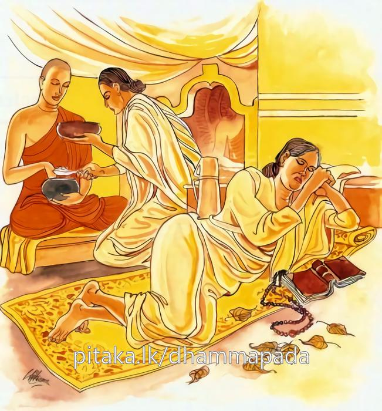

9-1 පළමුවන චූලඒකසාටක බමුණාගේ වස්තුවයි.
මෙම කතාව සද්ධර්ම සාගරයෙන් ද කියවන්න.
අභිත්ථරෙථ කල්යාණෙ පාපා චිත්තං නිවාරයෙ
දන්ධං හි කරොතො පුඤ්ඤං පාපස්මිං රමතී මනො.
(දාන ශීලාදි) සුචරිතධම්මවිෂයයෙහි යුහු වන්නේ ය (වහවහා කට යුත්තේ ය). කායදුශ්චරිතාදි අකුශල කර්මයෙන් (හෙවත් අකුශල චිත්තෝත්පාදයෙන්) සිත (හෙවත් නොයෙක් තැනින් වැද ගොයම් කන කුළු ගොනකු මෙන් නොරැක්ක හැකි විසභාග අරමුණට දිවෙන හෙයින් තුන් දුසිරිතෙන් නොවැළකිය හැකි වූ මේ කුළු සිත) වළකන්නේ ය. කුමක් හෙයින යත්: දානාදී කුශල කර්ම (යම් හෙයෙකින්) දන්ධ වැ (හෙවත් ‘දෙම් දෝහෝ,’ ‘නොදෙම් දෝහෝ,’ ‘කෙරෙම් දෝහෝ,’ ‘නො කෙරෙම් දෝහෝ,’ ‘කොට පියා හෙම් දෝහෝ,’ ‘නො කොට පියා හෙම් දො හෝ’ යී මෙ ලෙස ලැසි ගෙණ) කරන්නහුගේ සිත (මසුරුමල ආදි) අකුශලයෙහි ඇලේ. එ හෙයිනි.

අභිත්ථරෙථ කල්යාණෙ ආදි මේ ධර්මදේශනාව බුදුරදුන් දෙව්රම වාසයකරන කාලයෙහි චූලඒකසාටක නම් බමුණා නිසා දේශනා කරනලදි.
විපස්සිබුදුරදුන්ගේ කාලයෙහි මහාඒකසාටක නම් බමුණෙක් සිටියේය. මේ කතාවෙහි කියවෙන්නේ එකල සැවැත්නුවර සිටි චූලඒකසාටක ලෙසය. ඔහුට පොරවන එක් සළුවක් පමණක් තිබුණේය. බැමිණියටත් එයමය. දෙදෙනාම එකම සළුව පෙරවූහ. බැහැර යන කල බමුණා හෝ බැමිණිය එය පොරවා ගනියි. දිනක් විහාරයෙහි බණ ඇසීමට පැමිණෙන ලෙස ඝෝෂා කළවිට බමුණා, පින්වතිය, බණ ඇසීමට කාලය ඝෝෂා කරනලදි. කිම ඔබ දවල් බණ ඇසීමට යන්නෙහිද? නැතහොත් රාත්රියටද? පාරුපණයක් නැති නිසා අප දෙදෙනාටම යා නොහැකිය. බැමිණිය සැමියාණනි, මම දවල් යන්නෙමිය, සළුව පෙරවාගෙන ගියාය.
බමුණා දවල් කාලය ගෙදර ගතකොට රාත්රියෙහි ගොස් බුදුන් ඉදිරියෙන්ම හිඳගෙන ධර්මය ඇසුවේය. බණ අසා ඔහුගේ සිරුර පස්වණක්ප්රීතියෙන් පිනා ගියේය. ඔහු බුදුන්ට පුදනු කැමතිව, ඉතින් මේ සාටකය දුන්නොත් මට හෝ බැමිණියට හෝ පාරුපණයක් නැති වන්නේයයි සිතීය. ඔහුගේ සිත තුළ මසුරු කල්පනා දහස් ගණනින් ඉපදිණි. නැවත එක් ශ්රද්ධා සිතක් පහළවිය. එය යටපත් කරගෙන නැවත මසුරුසිත් පහළවිය. මෙසේ ඔහුග් සිතේ පහළ වන මසුරුසිත ඔහුගේ සිත බැඳගන්නාක් මෙන් ශ්රද්ධා සිත සිඳීගෙනම යයි. මෙය බුදුන්ට දෙන්නෙමි, නොදෙන්නෙමියයි සිතසිතා සිටින විට රාත්රි ප්රථම යාමය ගතවී ගියේය. මැදුම්යම පැමිණියේය. ඒ යාමයේදීත් දීගත නොහැකිවිය. පශ්චිම යාමය පැමිණි කළ හේ මෙසේ සිතීය. මගේ සැදැහැසිත සමග මසුරුසිත යුද්ධකරන අතර යාම දෙකක් ඉක්ම ගියේය. මේ මගේ මසුරුසිත වැඩී ගියොත් සතර අපායෙන් හිස ඔසවාගන්ට නොලැබෙයි. දැන් ඉතින් දන් දෙන්නෙමයි මසුරුසිත් දහස් ගණන මැඩපවත්වාගෙන ශ්රද්ධාසිත පෙරටු කරගෙන සළුව රැගෙන බුදුන්ගේ පාමුල තබා මම දිනුවා, මම දිනුවායය තෙවරක් කීවේය.
බණ අසමින් සිටි පසේනදි කොසොල්රජ, ඔහුගේ ඒ හඬ අසා, යම්, ගොස් ඔහු දනුවේ කුමක්දැයි අසා බලව්යයි කීකල්හි, එහි ගිය රාජපුරුෂයන් විසින් විචාරන ලදුව ඒ පුවත කීවේය. ඒ ඇසූ රජු බමුණා කර තිබෙන්නේ දුෂ්කර ක්රියාවකියි ඔහුට සංග්රහ කළයුතුයයි එක් සළු යුගළයක් දෙවීය. බමුණා එයද බුදුන්ට පිදීය. ඉන්පසු රජ දෙකක් හතරක් අටක් දහසයක් වශයෙන් දෙගුණ කරමින් සළු දෙවීය. හෙතෙම ඒ සියල්ලම බුදුන්ටම පිදීය. බ්රාහ්මණ තෙම, තමන් නොගෙන දෙන දෙන සළු පූජාකරන්නේමයයි කියවෙන වචනයෙන් මිදීම පිණිස ඒවායින් එක් සළු යුගළයක් තමන්ට එකක් බැමිණියට එකක් වශයෙන් රැගෙන ඉතිරි සළුයුගළ තිහම බුදුන්ටම පිදීය. රජ ඔහුට සියවරක් දුන්නත් තවත් දෙනු කැමති විය. පෙර මහාඑකසාටකව සිටි කල සිව්සැටක් සාටක යුගළවලින් දෙකක් ගත්තේය. මෙකල දෙතිසක් ලැබුණු කල දෙකක් ගත්තේය.
රජු පුරුෂයන්ට අණ කොට, සගයෙනි, බමුණා විසින් කර ඇත්තේ දුෂ්කර ක්රියාවකි. මේ කරුණ රජගෙදරදී මට මතක් කරවයි කීවේය. ඔවුහු එසේ කළහ. රජු ලක්ෂයක් වටිනා කම්බිලි දෙකක් දෙවීය. බමුණා, මෙතරම් වටිනා මේ කම්බිලි මගේ සිරුරෙහි ගෑවීමටවත් නුසුදුසුය. මේවා බුදුසසුනටම සුදුසුයයි එක් කම්බිලියක් බුදුන්ගේ ගඳකිළියේ බුදුන්ගේ සයනයට උඩින් වියනක් ලෙසින් බැඳ, අනික තමන්ගේ ගෙදර භික්ෂූන් දන් වැළඳීමට වැඩසිටින තැන උඩුවියනක් ලෙසින් බැන්දේය.
කොසොල් රජු සවස් වේලාවේ බුදුන් සමීපයට ගොස් කම්බිලිය හඳුනාගෙන ස්වාමීනි, මෙය කවුරුන් විසින් පුදන ලදදැයි අසා ඒකසාටක බමුණා විසිනැයි වදාළ කල්හි, බමුණා මා පැහැදෙන තැන්වලම ප්රසාදය ඇතිකර ගන්නෙකියි කියා, ඇතුන්, අසුන්, හතරදෙනා බැගින්ද, කහවනු හාරදහසක්, ස්ත්රීන් හතරදෙනෙක්, දාසියන් හතරදෙනෙක්, පුරුෂයන් හතරදෙනෙක්, ගම්වර හතරක් වශයෙන් මෙසේ සියල්ලෙන්ම හතර බැගින් ගෙන ඔහුට සබ්බචතුෂ්ක (සියල්ලෙන් හතරක්) යක් දෙවීය.
ධර්ම සභාවට රැස්වූ භික්ෂූහු, අහෝ චූලෙ-ඒකසාටක බමුණාගේ ක්රියාව ඉතා පුදුමයි. ඔහු එවේලාවේම සබ්බචතුෂ්කයක් ලැබුවේය. දැන් කළ යහපත් ක්රියාවෙන් අදම විපාක ලැබුණේය කියා කථාකරමින් සිටියහ. ශාස්තෘන්වහන්සේ එහි පැමිණ කරමින් සිටි කථාව ගැන අසා මෙබඳු කථාවකියි කීකල්හි මහණෙනි, යම්හෙයකින් මේ ඒකසාටකතෙම ප්රථම යාමයෙහි මට ඒ සාටකය දීමට පුළුවන්වූයේනම් සියල්ල සොළස බැගින් ලබන්නේය. යම් හෙයකින් මධ්යම යාමයේ දීමට හැකිවූයේ නම් සියල්ල අට බැගින් ලබන්නේය. උදෑසනම දීගත හැකිවූ හෙයින් සියල්ල හතර බැගින් ලැබීය. යහපත් වැඩ කරන්නහු විසින් උපන් සිත නොනසාගෙන එකෙණෙහිම කළයුතුය. පසුවෙවී කළ කුසලයෙහි විපාකද පසුවෙවී අඩුවෙවී ලැබෙයි. ඒ නිසා සිත පහළවූ හැටියේම යහපත් වැඩ කළයුතු යයි අනුසන්ධි ගළපා දහම් දෙසමින් මේ ගාථාවද වදාළහ:
වහා පින් කළ යුතු
පවින් සිත වෙන්කළ යුතු
පමාවන අයගේ සිත
පව්කම්වලම නියැලේ
එහි අභිත්ථරෙථ යනු වහවහා ශීඝ්රශීඝ්රයෙන් කළයුතුය යන අර්ථයි. ගිහියකු විසින් සලාකබත් දානාදි යම්කිසි පිනක් කරන්නෙමි යන කුසල් සිතක් ඇතිවූ හැටියේ අනික් අයට ඉඩ ලැබීමට පෙරාතුව මම පළමුව මම පළමුව වහවහා කළයුතුයයි කියාද, උපාධ්යායාදි වතාවත් කරන පැවිද්දකු විසින් නම් අනිත් අය ඒ වතාවත් කිරීමට පළමුව මම පළමුව මම පළමුව කරන්නෙමියි වහාම කළයුතුය. පාපා චිත්තං යනු කායදුශ්චරිතාදි පව්කම්වලින් අකුසලසිත් ඉපදීම්වලින් සියලු උත්සාහ දරා සිත මුදවා ගත යුතුය. දන්ධංහි කරොතො යනු යමෙක් දන් දෙම්ද නොදෙම්ද මට එයින් ප්රයෝජනයක් ලැබෙයිද නොලැබෙයිද යනාදි වශයෙන් මඩපාරක යන්නාක් මෙන් අස්ථිර සිතින් පින් කෙරෙයිද ඔහුට ඒකසාටක බමුණාට මෙන් මසුරුසිත් දහස් ගණනින් පහළ වී පවට අවකාශය ලැබෙයි. ඉන්පසු පාපස්මිං රමති මනො ඔහුගේ සිත කුසල්දහම් කරන වේලාවේදීත් සිත කුසලයෙහි මෙන්ම, ඉන්පසු එයින් මිදී පාපයෙහි ඇලීමේත් යෙදෙයි. ගාථා කෙළවර බොහෝ භික්ෂූහු සෝවාන්ඵලාදියට පැමිණියාහුය.